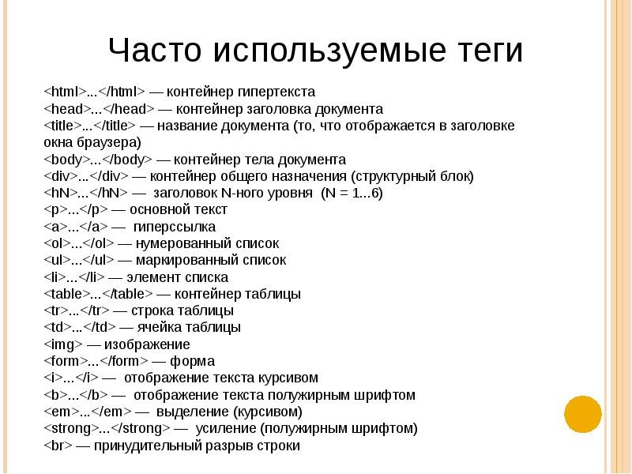

HTML (Hyper Text Markup Language) означает язык разметки гипертекста. Этот язык был разработан Тимом Бернерсом-Ли в рамках создания проекта распределенной гипертекстовой системы, которую он назвал World Wide Web (WWW) или Всемирная паутина. HTML предназначен для написания гипертекстовых документов, публикуемых в World Wide Web. Документ на языке HTML может включать следующие компоненты:
Документы HTML являются обычными текстовыми файлами, содержащими специальные теги (или управляющие элементы) разметки. Теги разметки указывают браузеру Web (программе пользователя для отображения web-страниц, например, Internet Explorer, Mozilla, Netscape или Opera), как надо вывести страницу.
Файлы HTML обычно имеют расширения htm или html. Их можно создавать при помощи любого текстового редактора.
В документе HTML можно выделить два основных блока: головная часть и тело документа. Содержимое головной части не выводится на экран пользователя, за исключением заголовка, в ней, как правило, указывают ключевые слова, авторов и другую служебную информацию, а также подключают внешние таблицы стилей и скрипты. В теле документа размещают ту информацию, которая будет выведена пользователю.
В разных операционных системах имеются различные редакторы, которые можно использовать для создания документов HTML. Если вы используете:
